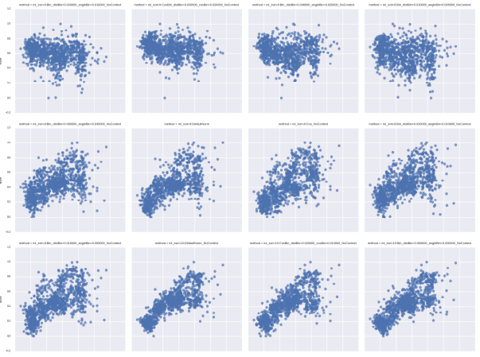

Filip Stefaniak
personal homepage
Hello!


I'm organic chemist by training with seven years med-chem and CADD experience in a pharma companies. Currently in academia, I focus on the translation of computational algorithms to new bioactive compounds. I'm the Machine Learning enthusiast.


Scientific projects
Prediction of compound activity and toxicity
I've created the pipeline for fast and reliable prediction of compound activity and toxicity. This approach was ranked in the top five most accurate predictions in the 2014 NIH Tox21 challenge. For more information, see: Prediction of Compounds Activity in Nuclear Receptor Signaling and Stress Pathway Assays Using Machine Learning Algorithms and Low-Dimensional Molecular Descriptors, Front. Environ. Sci., 01 December 2015 | http://dx.doi.org/10.3389/fenvs.2015.00077

A new scoring function for predicting RNA ligand interactions
I develop the new scoring function for predicting RNA - small molecule ligand interactions. With help of deep learning methods.

Computer Aided Drug Design
I'm involved in several projects focusing on the developement of new bioactive molecules. Recently published paper: Discovery of TRAF-2 and NCK-interacting kinase (TNIK) inhibitors by ligand-based virtual screening methods, Med. Chem. Commun., 2015, 6, 1564–1572
Currently I'm involved in the developement of the new, selective inhibitors of flavivirus methyltransferases (Yellow Fever Virus, Dengue Virus, West Nile Virus and Zika Virus).
Non scientific projects
Runs statistics
A collection of statistics of various runs and road races (5, 10, 21, 42 km) in Poland (in polish).

Professional skills
Drug developement
- Hit to lead:
- compound modification in affordable chemical space
- ADMET profiling
- Selectivity profiling
- SAR analysis
- Organic synthesis planning
- Patents, literature and database data analysis
- Protein-ligand interaction analysis
Computer Aided Drug Design
- Suites: Accelrys Discovery Studio, Schrödinger suite
- Ligand based methods: ShaEP, SHAFTS, align-it, fingerprint methods and others
- Target based methods: molecular docking: Autodock Vina, iDock, rDock (protein and RNA docking)
- Data mining and QSAR/QSPR: KNIME, Orange McQsar
- Structures handling and mining: Open Babel
- Visualisation: PyMol, Chimera, gnuplot
- Other: MOPAC, MestRec
- Databases: ChemBlDb, BindingDB, PDB, PubChem, PubMed
Data analysis and visualisation
- Big data sources: ChemBlDb, PubChem, PDB
- Data analysis: KNIME, python (pandas, numpy)
- Machine learning: KNIME, Weka, python (scipy), H2O (deep learning)
- Data visualisation: python (matplotlib, seaborn), KNIME
Computer skills
- Python, HTML, PHP, bash scripting, MySQL, Microsoft Office (+VBA), Libre Office, DokuWiki, LaTeX
- Operating systems: GNU/Linux (Debian, Ubuntu, Mint), Microsoft Windows
- Cluster computing
Other
- Prime number finding: 1041951957975*2^1290000-1 and 7255*2^887988+1 (via BOINC and PrimeGrid)
- 01h 51m in Half Marathon (21.097 km)